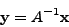
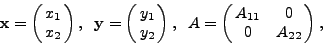
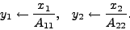
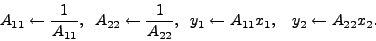

Next: Fixed size matrices and
Up: Gandalf: The Fast Computer
Previous: Error tests and codes
Contents
The Linear Algebra Package
The linear algebra package covers matrix and vector manipulations,
matrix decompositions and other operations.
To be able to use any function or structure in the linear algebra package
use the declaration
#include <gandalf/linalg.h>
but including individual module header files instead will speed up program
compilation.
There are two parts to the linear algebra package, one dealing with small
fixed size vectors and matrices, between size two and four, and another
for general size objects. This separation allows the most efficient
implementation of linear algebra operations when the size of the objects
is known and small. Being designed to support image- and goemetry-based
applications, the size range from two to four allows 2D image and
3D camera/world objects to be manipulated, in homogeneous coordinates
where required; thus four is the natural size limit for Gandalf.
A major design feature of the linear algebra package is the application
of implicit operations. By this is meant, for example, that adding
a matrix to the transpose of another matrix is a one step operation.
Rather than transposing the matrix and then adding it, there is a specific
Gandalf routine to apply the operation ``add matrix to transpose of another
matrix'', implemented by indexing the elements of the second matrix in
transposed order. This principle increases greatly the number of routines
that Gandalf implements, but also greatly increases the efficiency of
the package. It can also help to reduce errors, in the case of implicit
matrix inverse. Let us say that we want to compute a matrix/vector product
where the matrix is to be inverted:

If  happens to be a diagonal matrix, it makes sense to apply the inverse
operation implicitly, inside the product operation. This is because if, for
example, we are dealing with vectors & matrix of size 2, we have
happens to be a diagonal matrix, it makes sense to apply the inverse
operation implicitly, inside the product operation. This is because if, for
example, we are dealing with vectors & matrix of size 2, we have

and the operations required are

Applying the inverse firstly to and then computing the product would
involve the following operations

This has two drawbacks: the two stages of inverting followed by multiplication
reduces the accuracy of the result compared to a single division operation,
and the matrix is overwritten with the inverse of , which is not
normally what is wanted (explicit matrix inverse is to be avoided wherever
possible). As we shall see, Gandalf implements a comprehensive set of
implicit transpose and inverse operations, which apply when the matrix
involved is diagonal (as above) or triangular. For these types of matrix
the inverse operation can be conjoined with multiplication, such that
effectively only one operation is performed.
Implicit inverse does not apply to symmetric or general square matrices,
because there is no way of conjoining the inverse with multiplication in
the same way.
Subsections
Next: Fixed size matrices and
Up: Gandalf: The Fast Computer
Previous: Error tests and codes
Contents
Philip McLauchlan
2009-01-27